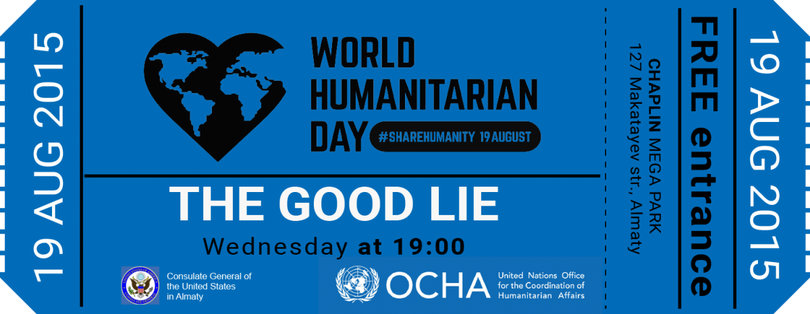

World Humanitarian Day
World Humanitarian Day 2015 – ROCCAU
In celebration of World Humanitarian Day on 19 August, OCHA Regional Office for the Caucasus, Central Asia and Ukraine (ROCCAU) held a public movie screening of “The Good Lie”. The film is based on a true story and traces the lives of the “the lost boys and girls” – children orphaned by the brutal civil war in Sudan that began in 1983.
The aim of the movie screening was to help promote and spread awareness of humanitarian issues in South Sudan and beyond.

Before the screening, ROCCAU with generous support from Ramada Almaty hotel, organized a reception and a photo exhibition for guests. Several UN staff members – from UNHCR, OCHA and UN Women – spoke with the guests about their experiences working in humanitarian crises. The photo exhibition was a collection of stories of and from people affected by disasters and conflict in over 30 countries today. The idea behind the exhibition was to encourage dialogue about humanitarian issues, and help educate the public about the work of humanitarian actors and the realities of humanitarian disasters and relief efforts.
.jpg)
While the event was open to public, seating was limited and guests were asked to pick up their free ticket ahead of the screening. The day before the event, no tickets were left but requests for more tickets continued onto 19 August.

Overall, between 130 and 150 people attended the World Humanitarian Day event.
“Every year on 19 August we celebrate the spirit that inspires humanitarian work around the world, and pay tribute to the bravery and commitment of humanitarian workers,” – said Dr. Willem Muhren, OIC Head of OCHA ROCCAU, opening the film screening.
After the screening, a number of guests thanked OCHA on social media. “Thanks, it was an interesting and motivational evening,” said one viewer on Facebook. A representative of Central Asia Communications in Almaty posted, “Life. Home. Family. Values. Courage. Humanity. In celebration of World Humanitarian Day, UN office in Kazakhstan organized a movie screening of "The Good Lie". A deep, touching movie. Thank you so much for this evening and for the work you are doing around the world. #SHAREHUMANITY”
The event was attended by a mix of representatives from the diplomatic community, international organizations, United Nations, private sector, and students.
About World Humanitarian Day
August 19 marks the anniversary of the 2003 United Nations Headquarters bombing in Baghdad, which claimed the lives of 22 people. In an effort to raise awareness of humanitarian assistance worldwide – and the people who risk their lives to provide it – the United Nations General Assembly in 2008 designated August 19 as World Humanitarian Day.
Links:
- Emergency Relief Coordinator Stephen O’Brien message to World Humanitarian Day
- World Humanitarian Day 2015 promo video
- World Humanitarian Day website
- UN SG Ban ki-Moon World Humanitarian Day 2015 message
- Press release - Celebrations held around the world to commemorate World Humanitarian Day 2015
- Opening remarks by Dr. Willem Muhren, Officer in Charge, Regional UNOCHA Office for Caucasus and Central Asia